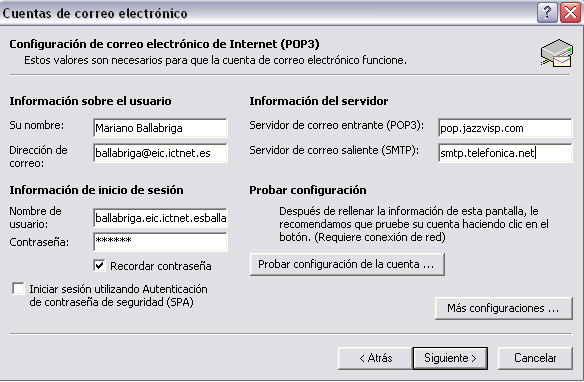
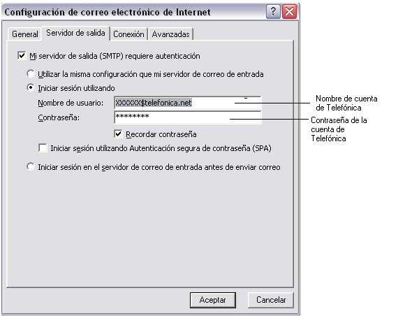

Configuración para clientes que reciben pero no envían de ICTNET
El problema que tienen los clientes del ICTNET a la hora de enviar correos es debido a que tienen la una conexión de internet ( ADSL ) con TELEFONICA ( u otro operador distinto de Jazztel )
Telefónica esta bloqueando todos sus rangos de direcciones IPs para el uso de SMTP (Puerto 25). Aproximadamente tienen el 50% bloqueados.
Esto hace que cualquier cliente de telefónica que intente usar nuestros servidores de correo, va a poder recibir correos (puerto 110 Pop), pero no enviarlos a través de nuestros servidores (Configuración normal que hacemos con autentificación de usuarios)
Para solucionarlo hay que configurar el SMTP con los datos de telefónica.
Es muy importante que cuando un cliente llame por este problema le indiquéis lo siguiente:
1) Telefónica esta bloqueando desde sus ADSL el envío de correos cuando el remitente intenta usar un servidor distinto al de telefónica
2) Este bloqueo no depende ni puede ser controlado por Jazztel
3) Para solucionarlo, le ayudamos a configurar su correo saliente a través de telefónica, aunque debería ser telefónica quien le ayudara a hacer esto.
4) Jazztel no realiza este tipo de bloqueos por lo que le invitamos a dar de alta su ADSL con Jazztel.
Para realizar la configuración tienen que tener una cuenta de correo creada con TELEFONICA u otro operador
Por lo que tienen que poner el smtp de TELEFONICA u otro operador y autentiar el servidor de salida para ello es necesario que pongan el usuario y la contraseña de la cuenta de TELEFONICA u otro operador
Se adjuntan pantallazas de cómo queda
Una vez realizado esto correctamente el cliente puede enviar correos sin problema

